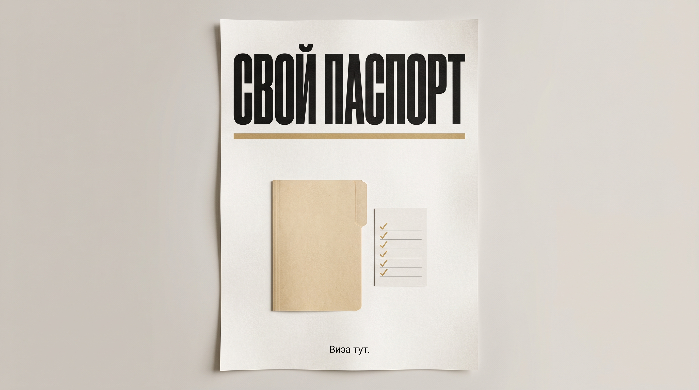

Блог · Паспорт · 18 октября 2026
Какие документы собрать на загранпаспорт ребёнку

Ребёнку до 14 лет нужен свой загранпаспорт. Свидетельство о рождении поездку не закрывает, строка в паспорте родителя детский документ не подменяет. На стол кладут свидетельство, паспорт РФ родителя, пометку про согласие второго родителя, фото и старый детский загран, если он есть и срок ещё идёт. Младенцу до года правило то же: паспорт делают с рождения.
Марина собралась с сыном девяти месяцев в Минск. Свидетельство лежит в сумке, муж говорит, что ребёнок и так есть в его загране на 10 лет. Подруга прислала чужой список: нотариус, квитанция и взрослая анкета на двоих. Марина боится пустой явки и того, что их развернут в день приёма.
Если честно, этот список тянет не туда.
Нотариус нужен не каждой семье. Квитанцию ведомство требовать не вправе, пошлину при этом платят отдельно. Взрослая анкета на двоих детское заявление не заменяет. Я бы сначала выписал пять строк и поставил пометку: есть, нет, не про нас, решить до записи.
Сверить страну со списком МИД
С 20 января 2026 свидетельство о рождении убрали из документов, по которым дети до 14 лет выезжают в Абхазию, Беларусь, Казахстан, Киргизию и Южную Осетию. Так пишет сообщение консульской службы МИД. Подсказка «в Беларусь хватит свидетельства» устарела. Для Минска Марине нужен собственный загран сына.
Вернуться в Россию по свидетельству можно тем, кто выехал по нему до 20 января 2026. Это не разрешение ехать так снова.
До конца 2027 года пограничная служба по решению Президента снова пускает детей до 14 лет по свидетельству с отметкой о российском гражданстве через границу с Абхазией и Южной Осетией. Для Беларуси, Казахстана и Киргизии оговорки нет. Временный пропуск не список бумаг на подачу и не повод отложить детский паспорт.
Консульства там не оформляют свидетельство на въезд взамен утраченного и на случай, когда ребёнку за рубежом исполнилось 14 лет. Договорённости, где свидетельство ещё числится, МИД называет действующими и пишет, что их приводят к новому закону. Въезд на этот зазор не обещаем.
Пресс-центр МВД 26 марта 2026 ещё пишет: отдельный загранпаспорт либо сведения у родителя, и добавляет страну, которой в сообщении МИД нет. Вычеркните «вписать к папе». В паспорт с электронным носителем ребёнка для выезда не вносят: нужен свой. Десятилетний загран мужа Марины детский документ не подменяет.
Собрать пять бумаг до записи
Минимум со страницы услуги: свидетельство о рождении, паспорт РФ родителя, согласие второго родителя если нужно, фото ребёнка, старый детский загран если есть. Кто подаёт и нужно ли согласие, разбирают до записи.
Проверьте гражданство на свидетельстве. Нет отметки: добавляйте документ о гражданстве. Усыновитель, опекун или попечитель кладёт полномочия.
На Госуслугах для паспорта на 5 лет те же опоры, заявление и пошлина. Сумму не переносим. Портал явку не отменяет. Сканы для разбора, оригиналы к приёму.
| Возраст | Что положить | Явка |
|---|---|---|
| До года, с рождения | Свидетельство, паспорт РФ родителя, согласие если нужно, фото. Нет гражданства: отдельный документ | На 10 лет лично, с рождения. Отпечатков нет |
| От года до 12 лет | Те же бумаги и старый детский загран, если срок ещё идёт | Личная явка. В паспорт снимают в подразделении МВД или в криптобиокабине |
| С 12 до 14 лет | Тот же список | К явке на 10 лет добавляются отпечатки |
| День 14 или 18 лет | Из-за дня рождения новый набор не появляется | Замену эти даты сами не требуют. Меняют, когда кончился срок. Продлить нельзя |
На 5 лет к заявлению две фотографии по возрасту на день подачи. Снимок для Госуслуг или фото 35 на 45 мм в центре «Мои документы» нужен анкете, не готовому паспорту.
Развести согласие на выдачу и согласие на поездку
Это две разные бумаги. Нотариальное согласие нужно, когда ребёнок едет без законного представителя: в нём срок выезда и страна. Обычно ребёнок едет хотя бы с одним таким представителем. Правила въезда чужой страны смотрите у этой страны.
Например, сын едет с мамой в Минск. Согласие «на всякий случай» может быть «нет, не про нас». Едет с бабушкой без родителей: решить до записи.
Вторая бумага про выдачу паспорта. Если уже подано несогласие родителя, усыновителя, опекуна или попечителя на выезд, по карточке Госуслуг паспорт не оформляют и заявителю дают причину. Такое несогласие мешает выдаче. Списки «нотариус каждому» не подходят.
Выбрать 10 лет или 5 лет
На странице услуги две детские строки. Своя анкета, не строка в родительской форме. Какая подходит, выберите до записи.
Документ на 10 лет оформляют с рождения. Личное присутствие обязательно, фото на документ делают в подразделении МВД или в криптобиокабине, отпечатки с 12 лет.
Удалённо отпечатки не сдать.
Срочный порядок для этого образца страница не даёт. Календарь ведомства в поездку не подставляем.
На 5 лет биометрия другая: готовьте две фотографии по возрасту. День 14 или 18 лет сам загран не сжигает.
Положить старый детский загран в стопку
Если старый детский загран ещё действует, возьмите его с собой. Если он утрачен, нужно заявление о недействительности. Молча новый не просите.
Заявление лично подаёт один законный представитель: родитель, усыновитель, опекун или попечитель. Анкету к взрослой не клеят. В «Виза тут» анкету готовят отдельно и смотрят комплект до записи. Взрослый документ смотрите на странице загранпаспорта. Детский комплект от неё не берут. Паспорт выдаёт ведомство. Визу это не обещает.
Придите с ребёнком и оригиналами в срок приглашения, иначе рассмотрение приостановят. Это срок явки, не день выдачи.
Открыть цену в блоке «Стоимость»
Цену услуги легко спутать с пошлиной и со сроком ведомства. Цену откройте в блоке «Стоимость». Пошлина сверху и в цену не входит, сумму не пишем. Держите её отдельно. Срок на странице услуги про нашу работу. Срок ведомства не обещаем.
Виза это разрешение страны въезда. Её ставят только в готовый паспорт, согласие на выезд её не заменяет. Пока паспорта нет, детскую визу не начинаем.
Результат простой. Вы сможете отметить пять пунктов и выбрать срок до записи.
- Выпишите цель: свой загран ребёнка.
- Сверьте страну с текстом МИД от 20 января 2026.
- Сложите пять бумаг со страницы услуги.
- Проверьте гражданство и полномочия, если заявитель не родитель.
- Решите до записи, нужно ли согласие второго родителя.
- Выберите 10 лет или 5 лет и явку под этот срок.
- Откройте блок «Стоимость». Пошлину держите отдельно. Визу не начинайте без паспорта.
Оставьте заявку: имя, телефон, страна. Анкету принимаем и из другого города. Оригиналы в офисе или курьером, подача в Москве.
Телефон +7 (495) 662-98-99. Адрес и часы: контакты, Москва, Большая Полянка 42, строение 1, 4 этаж, офис 426, с понедельника по пятницу, с 10:00 до 18:00. Дальше: как мы работаем, услуги без цен, блог.
Если по стопке уже ясно, чего не хватает, заявка та же. Решения ведомства и консульства остаются не за нами.
Частые вопросы
Нужен ли ребёнку загранпаспорт для поездки в Беларусь?
Да, свой. С 20 января 2026 свидетельство для Беларуси МИД из документов выезда убрал. Пропуск до конца 2027 года только на границе с Абхазией и Южной Осетией, не для Минска.
Хватит ли свидетельства о рождении ребёнку до года?
Как проездного документа нет. Паспорт оформляют с рождения, на 10 лет младенец приходит лично.
Можно ли вписать ребёнка в загранпаспорт родителя вместо своего?
В чеклист так не берём. Сведения для выезда только в паспорт родителя на 5 лет. С электронным носителем нужен свой паспорт ребёнка.
Какие документы собрать на загранпаспорт ребёнку до 14 лет?
Свидетельство, паспорт РФ родителя, согласие если нужно, фото, старый детский загран если срок идёт. Нет гражданства в свидетельстве: отдельный документ.
Когда нужно согласие второго родителя?
Когда ребёнок едет без законного представителя. Уже поданное несогласие на выезд мешает выдаче паспорта. Что про вас, решают до записи.
С какого возраста ребёнок приходит лично и сдаёт отпечатки?
На 10 лет лично с рождения, отпечатки с 12 лет. На 5 лет две фотографии по возрасту. День 14 или 18 лет замену сам не требует.
Где смотреть цену услуги и пошлину?
Цену смотрите в блоке «Стоимость» на странице паспорта ребёнку. Пошлина сверху, сумму не пишем. Срок ведомства не обещаем.